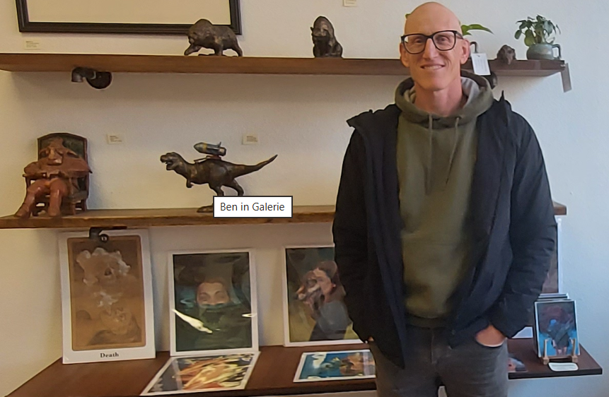
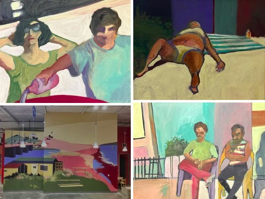

Meet the Artists
Get to know the creative people behind the artwork and discover the stories that inspire them.

Artist Spotlight
Ben Vose
Fremont artist Ben Vose rediscovered his passion for art and created Galerie Artax in Niles. Through exhibitions, workshops, and creative events, he helps bring artists and the community together.
His story shows how art can connect people and make creativity part of everyday life.


Artist Spotlight
Nancy Benton
Fremont-area painter Nancy Benton creates paintings of landscapes, figures, and urban settings. She draws inspiration from the colors and forms she sees around her, exploring how they can be expressed on canvas.
Her work invites viewers to look closely and discover their own connections with the painting.
Artwork by Nancy Benton. See her website for image credits and usage terms.
Every Artist Has a Story
Everyday Art celebrates emerging artists, different creative styles, and the experiences that inspire people to make art. Explore the site to discover new work and learn more about the people who create it.
Discover Art. Share Your Story.
Every artist has a unique perspective to share. Explore creative work from different backgrounds, or help us introduce others to artists whose work deserves to be seen.